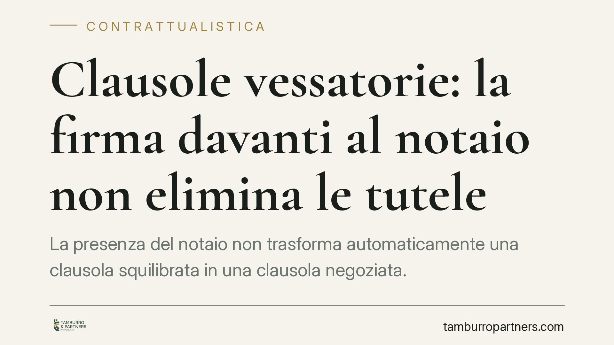

Clausole vessatorie: la firma davanti al notaio non elimina le tutele
La presenza del notaio non trasforma automaticamente una clausola squilibrata in una clausola negoziata. Quando un contratto è predisposto unilateralmente dal professionista, l'onere di dimostrare una trattativa seria ed effettiva resta a suo carico. Un principio che tocca mutui, preliminari di compravendita e atti immobiliari di uso quotidiano, dove la rogitazione notarile viene spesso percepita, a torto, come un sigillo che chiude ogni contestazione.

Il principio
La questione affrontata in sede di merito ribadisce un punto consolidato ma spesso frainteso: il controllo del notaio e la negoziazione del contenuto contrattuale sono due cose diverse.
Il notaio verifica la legalità dell'atto, l'identità delle parti e la chiarezza delle dichiarazioni. Non ha invece il compito di riequilibrare un contratto predisposto da una sola parte, né la sua presenza prova che le singole clausole siano state oggetto di una reale trattativa individuale.
Tradotto: la firma davanti al pubblico ufficiale non "sana" né rende inattaccabili le clausole potenzialmente vessatorie.
Cosa significa "vessatorio"
Una clausola è vessatoria quando determina, a carico del consumatore, un significativo squilibrio dei diritti e degli obblighi derivanti dal contratto, in contrasto con la buona fede.
Non rileva il prezzo o la convenienza dell'affare in sé, ma l'assetto giuridico: limitazioni di responsabilità del professionista, facoltà unilaterali di recesso o modifica, decadenze e termini sfavorevoli, clausole che restringono le difese del consumatore.
Il giudizio non è automatico: va valutato caso per caso, alla luce del contenuto concreto dell'atto.
Il quadro normativo
Occorre distinguere due piani che spesso vengono confusi.
Il Codice del Consumo (D.Lgs. 206/2005) disciplina le clausole vessatorie nei contratti tra professionista e consumatore. L'art. 34 individua i criteri di valutazione della vessatorietà e prevede, in presenza di contratti conclusi mediante moduli o formulari predisposti dal professionista, che spetti a quest'ultimo l'onere di provare che le clausole sono state oggetto di trattativa individuale. La trattativa, per escludere la tutela, deve essere seria, effettiva e specifica: non basta una generica dichiarazione di presa visione.
Su un piano distinto opera l'art. 1341 del Codice civile, che riguarda le condizioni generali di contratto predisposte da uno dei contraenti e richiede, per determinate clausole onerose, la specifica approvazione per iscritto (la cosiddetta "doppia firma"). Questa disciplina si applica a prescindere dalla qualità di consumatore e opera anche nei rapporti tra imprenditori.
Le due tutele possono coesistere, ma hanno presupposti soggettivi diversi: la prima protegge il consumatore, la seconda chiunque aderisca a condizioni predisposte da altri.
Perché conta: l'onere della prova
Il nodo pratico è la ripartizione dell'onere della prova. Quando il contratto è predisposto unilateralmente, non è il consumatore a dover dimostrare di non aver negoziato: è il professionista a dover provare che la trattativa c'è stata.
Qui si inserisce l'equivoco sul notaio. La sottoscrizione dell'atto pubblico, da sola, non costituisce prova di negoziazione. Serve a documentare che le parti hanno firmato, non che hanno discusso e modificato le singole clausole.
Di conseguenza, chi predispone moduli, formulari o schemi contrattuali standard non può confidare nella rogitazione come scudo: deve essere in grado di documentare il percorso che ha portato all'assetto finale.
Implicazioni pratiche
Per il consumatore, significa che la firma di un atto notarile non preclude la possibilità di contestare clausole squilibrate: la tutela consumeristica resta disponibile.
Per il professionista e per l'imprenditore che operano con contratti standardizzati, significa che la prevenzione passa dalla tracciabilità: senza una documentazione della trattativa, in caso di contenzioso la posizione processuale è debole.
L'ambito applicativo è vasto. Contratti bancari e finanziari, preliminari di compravendita, condizioni generali allegate ad atti immobiliari: sono tutti terreni in cui clausole standard e rogito convivono abitualmente.
Cosa fare in concreto
- Conservare la documentazione precontrattuale: bozze, scambi di email, proposte e controproposte che attestino l'effettiva discussione del contenuto.
- Verbalizzare la trattativa sulle clausole sensibili, dando conto delle modifiche richieste e di quelle accolte o respinte.
- Distinguere tra clausole realmente negoziate e condizioni predisposte in modo unilaterale, senza affidarsi a generiche formule di approvazione.
- Non confondere il controllo di legalità del notaio con una validazione del merito economico-giuridico delle singole clausole.
- È opportuna una verifica legale preventiva degli atti complessi, per individuare in anticipo le clausole potenzialmente critiche.
*Nota sugli estremi: la pronuncia di merito richiamata è segnalata dalle fonti di stampa specializzata; gli estremi definitivi (numero e data di deposito) sono da confermare alla pubblicazione ufficiale.*
---
Contributo informativo a cura di Tamburro & Partners Avvocati. Non costituisce parere legale.
Ogni contratto ha il suo equilibrio.
Se vuoi una revisione delle clausole o una redazione su misura, scrivi allo studio. Ti rispondiamo entro un giorno lavorativo.